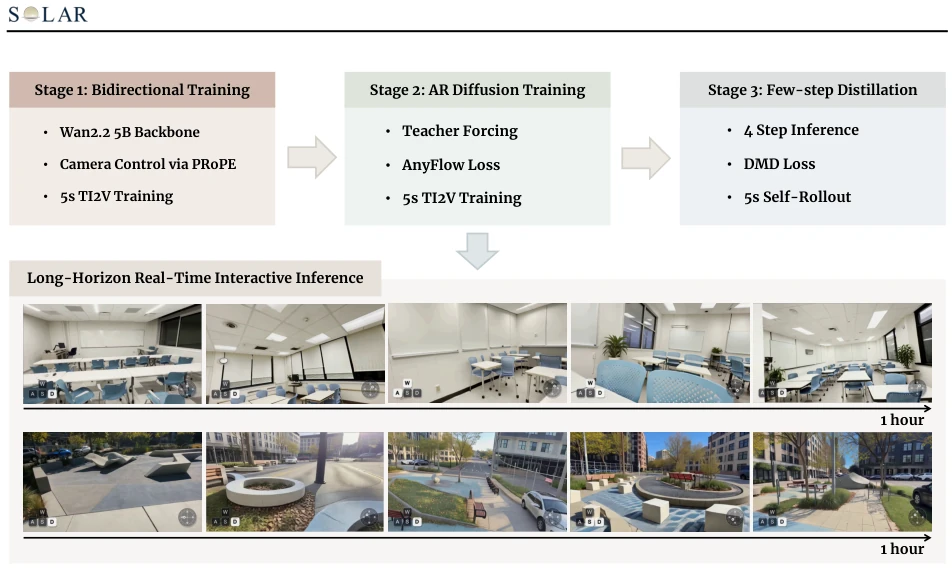
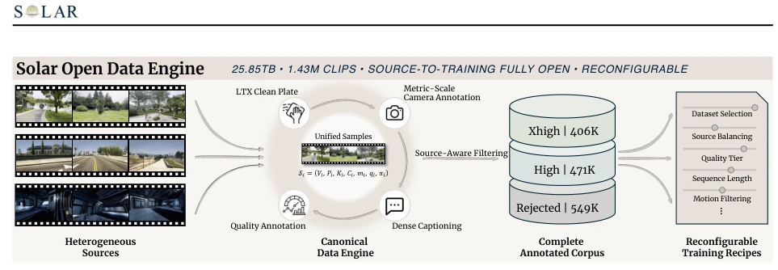
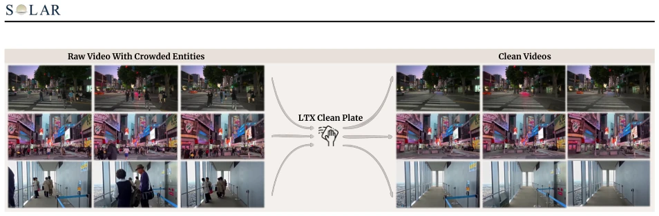
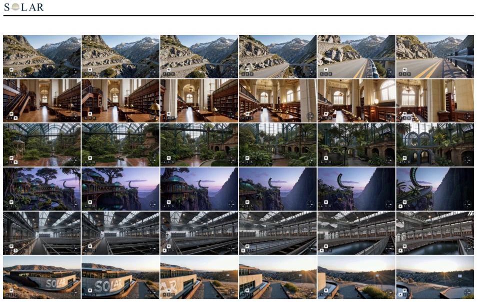
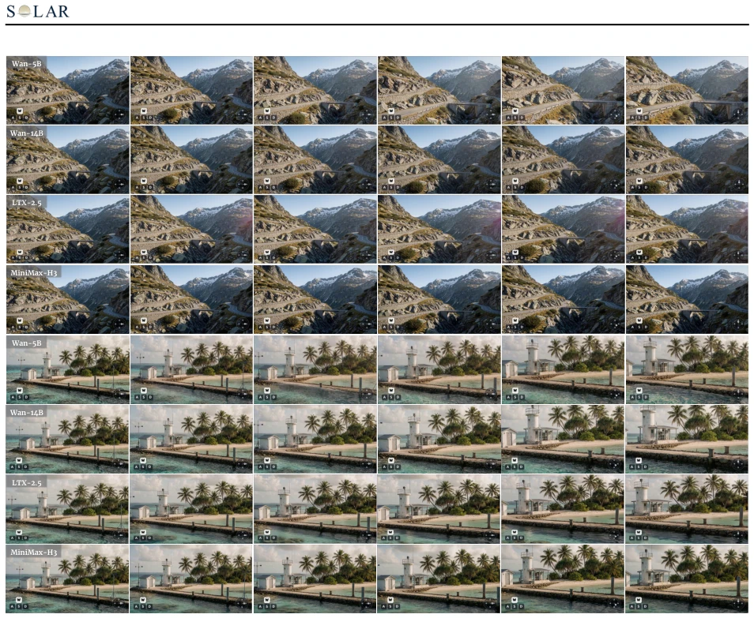
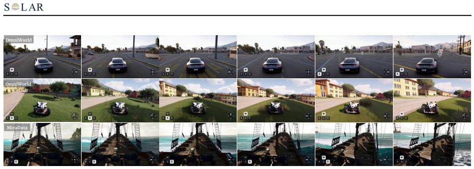
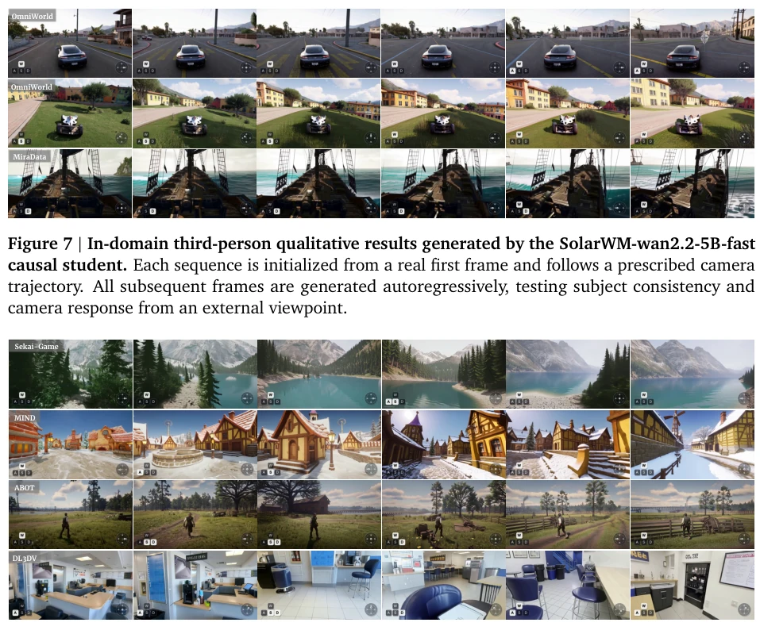
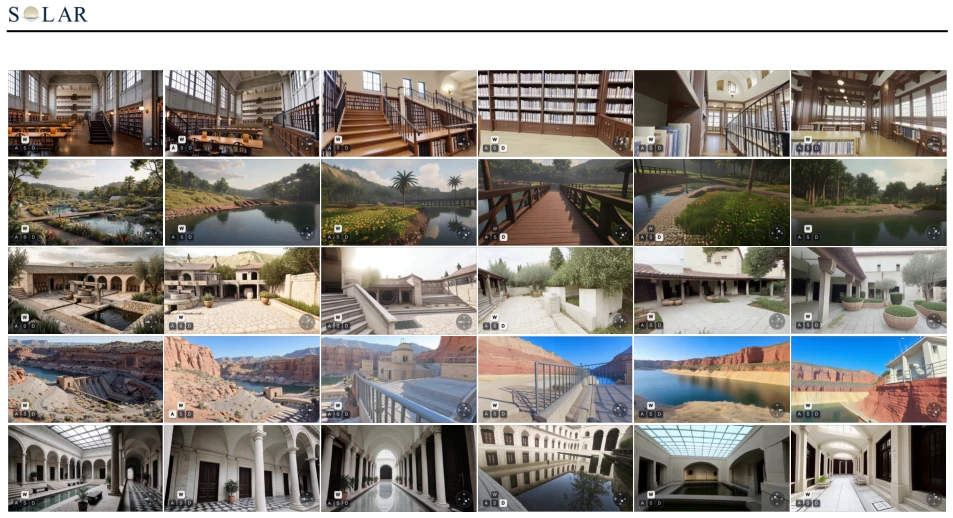
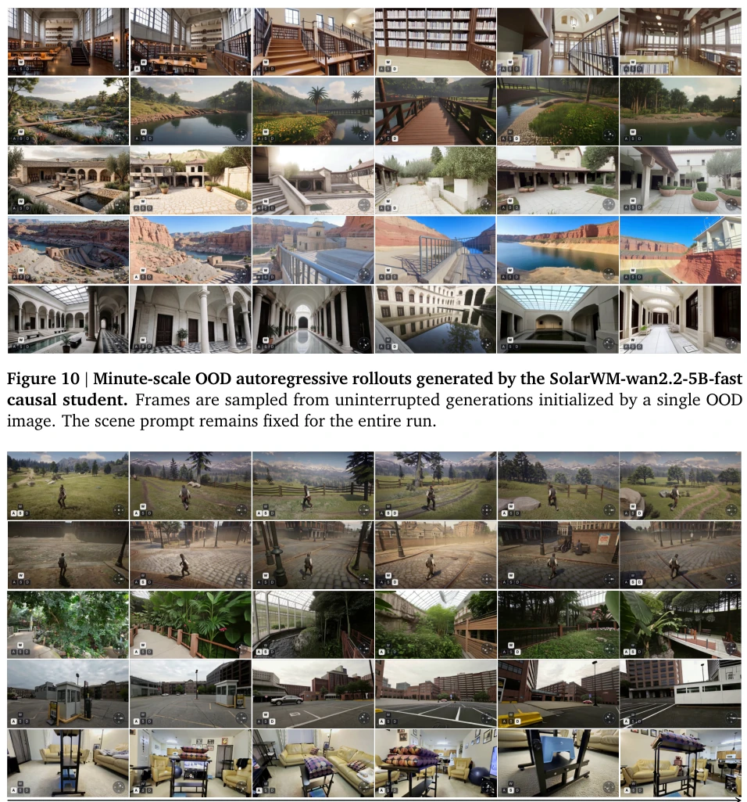

SolarWM is truly an open-source powerhouse this time, directly packaging 25TB of data + complete training pipeline, attempting to outperform "model architecture" with "data engineering". The highlight lies in unifying heterogeneous data standards, processing 10 datasets into 1.43M standardized clips, solving the pain points of "data silos" and "model privatization" in previous world models. However, the 25TB threshold dissuaded many small and medium-sized teams. The so-called "long horizon" can run at hour-level after 5s training, but whether distribution matching (DMD) in causal training can truly eliminate cumulative errors completely depends on specific scenarios. Additionally, this process heavily relying on data cleaning might turn "reproduction" into "redoing data cleaning". Overall, this is an attempt to pull world models back from "alchemy" to "engineering", but the cost of data cleaning might be more expensive than training models, suitable for large enterprises rather than small workshops.
研究动机Motivation
当前交互式视频世界模型面临两大耦合难题：数据异构与模型私有化。现有系统如 Genie [Bruce et al., 2024]、DreamX-World [DreamX Team et al., 2026] 和 AlayaWorld [AlayaWorld Team et al., 2026] 往往依赖特定环境或数据集，导致多源数据混合时出现监督不一致，模型性能下降。此外，视频生成器架构差异大，缺乏统一的适配框架，使得跨模型比较和扩展变得困难。大多数开源项目仅发布权重或推理代码，缺乏可复现的数据处理管线和精确的混合配方。SolarWM 旨在打破这种耦合，通过标准化数据合同和原生适配框架，实现跨异构数据源和模型的高效训练与长视界推理，填补了统一训练栈的空白。
Current interactive video world models face two major coupling difficulties: data heterogeneity and model privatization. Existing systems such as Genie [Bruce et al., 2024], DreamX-World [DreamX Team et al., 2026], and AlayaWorld [AlayaWorld Team et al., 2026] often rely on specific environments or datasets, leading to supervision inconsistency when mixing multi-source data and model performance degradation. Additionally, video generator architectures vary greatly, lacking a unified adaptation framework, making cross-model comparison and extension difficult. Most open-source projects only release weights or inference code, lacking reproducible data processing pipelines and precise mixing recipes. SolarWM aims to break this coupling, through standardized data contracts and native adaptation frameworks, achieving efficient training and long-horizon inference across heterogeneous data sources and models, filling the gap in unified training stacks.

Figure 2 | Overview of the SolarWM-5B training pipeline and hour-scale inference results
方法Method
SolarWM 的核心是“数据引擎 + 原生适配”架构。数据层面，Solar Open Data Engine 将 10 个异构数据集转化为统一帧对齐的合同，包含视频、度量级相机轨迹（VIPE SLAM 估计）、密集描述及质量元数据。通过 LTX Clean Plate 移除动态人物车辆，确保相机控制信号纯净。训练采用三阶段配方：首先，双向适应，利用 fused-PRoPE 将相机几何注入注意力机制，保留预训练视觉先验；其次，教师强制 AnyFlow 初始化，引入因果注意力并直接生成少步自回归检查点，跳过复杂的 ODE 初始化；最后，基于分布匹配蒸馏的因果训练，通过冻结的双向教师校准因果学生的推理分布。模型层面，SolarWM 不修改 backbone 原生表示，仅通过适配器暴露相机条件接口，支持 Wan2.2、LTX-2.5 和 MiniMax-H3 等不同架构，实现跨模型的可比性与扩展性。
The core of SolarWM is the "Data Engine + Native Adaptation" architecture. At the data level, Solar Open Data Engine converts 10 heterogeneous datasets into unified frame-aligned contracts, including video, metric-level camera trajectories (VIPE SLAM estimation), dense descriptions, and quality metadata. Removing dynamic people and vehicles via LTX Clean Plate ensures pure camera control signals. Training adopts a three-stage recipe: first, bidirectional adaptation, using fused-PRoPE to inject camera geometry into the attention mechanism, preserving pre-trained visual priors; second, teacher forcing AnyFlow initialization, introducing causal attention and directly generating few-step autoregressive checkpoints, skipping complex ODE initialization; finally, causal training based on distribution matching distillation, calibrating the causal student's inference distribution via frozen bidirectional teachers. At the model level, SolarWM does not modify backbone native representations, only exposing camera condition interfaces through adapters, supporting different architectures such as Wan2.2, LTX-2.5, and MiniMax-H3, achieving cross-model comparability and scalability.

Figure 3 | Overview of the Solar open data engine.

Figure 4 | LTX Clean Plate processing. Representative frames before (left) and after (right) applying the LTX-2.3 Clean Plate pipeline. The transformation removes dynamic people and vehicles while preserving the static scene layout and the source camera trajectory, yielding cleaner supervision for camera-controlled world-model training.
Experiments are built based on 1.43M standardized clips (25.85TB), covering real, synthetic, and game environments. Four models (5B-33B) were trained, achieving minute-to-hour-level open-horizon inference with only 5s sequence training. Results show that SolarWM reaches SOTA performance without specialized ODE or consistency distillation initialization. Ablation shows bidirectional training bears main optimization, AR adaptation converges fast, DMD steps few. Long-horizon generation demonstrates stability of hour-level continuous generation, OOD generalization also performs well. Compared to other open-source systems, SolarWM provides complete data, pipeline, and recipe, supporting reproducible cross-model comparison, validating the effectiveness of unified data contracts.

Figure 9 | OOD generalization from externally synthesized initial images, generated by the SolarWM-wan2.2-5B-fast causal student. Initial frames are paired with independently specified camera trajectories. Only the first image is externally provided; every subsequent frame in each 10-second rollout is generated autoregressively. The examples span photorealistic, stylized, and deliberately unusual scenes outside the released validation set.
其他图片Other Figures

Figure 6 | OOD qualitative results of the bidirectional pretrained model family. Each backbone route generates a 10-second video from an OOD first frame and a prescribed camera trajectory.

Figure 7 | In-domain third-person qualitative results generated by the SolarWM-wan2.2-5B-fast causal student. Each sequence is initialized from a real first frame and follows a prescribed camera trajectory. All subsequent frames are generated autoregressively, testing subject consistency and camera response from an external viewpoint.

Figure 8 | In-domain minute-scale qualitative results generated by the SolarWM-wan2.2-5B-fast causal student. Each uninterrupted sequence is initialized from its real first frame and follows a given camera trajectory; all subsequent frames are generated autoregressively.

Figure 10 | Minute-scale OOD autoregressive rollouts generated by the SolarWM-wan2.2-5B-fast causal student. Frames are sampled from uninterrupted generations initialized by a single OOD image. The scene prompt remains fixed for the entire run.

Figure 11 | Hour-scale world rollout generated by the SolarWM-wan2.2-5B-fast causal student. Sparse frames are sampled throughout a single uninterrupted autoregressive session initialized with a real first frame from the held-out validation pool, spanning the initial observation to the 60-minute endpoint. The scene prompt remains fixed and the model follows a predetermined camera trajectory.